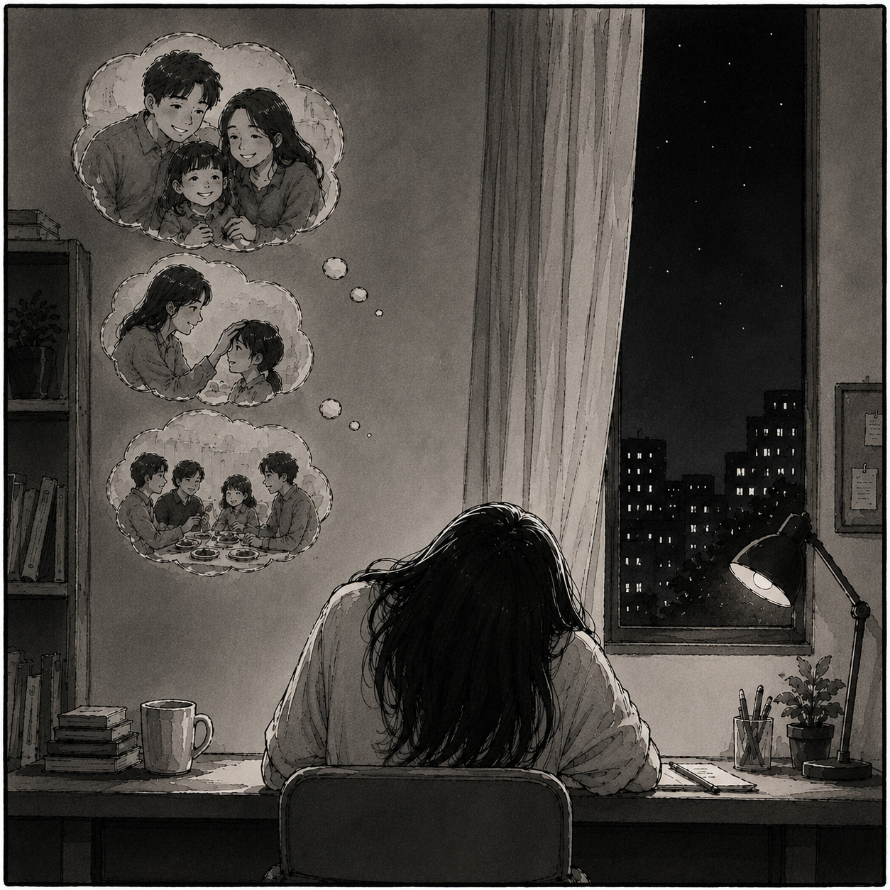
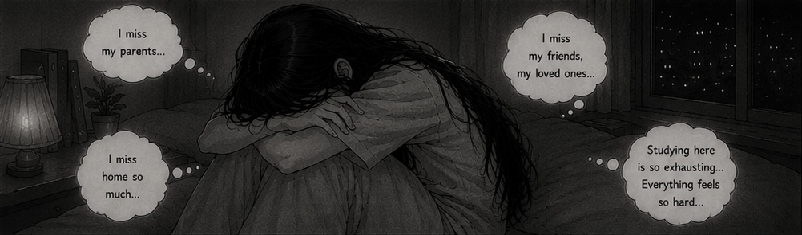

Chapter 2
Far From Home
As the days went by, things were no longer as exciting as they had been at first. The curiosity and happiness I once felt about everything new and unfamiliar slowly began to disappear.
Instead, I began to feel confused and lost, as if I were trapped in a maze with no clear direction.
I often felt like an outsider, unable to connect with others or find a place where I truly belonged.
I often struggled to understand what people were saying around me.
Because my English was not very good at the time, I found it difficult to communicate and express my thoughts clearly.
Many times, I wanted to ask people to repeat what they had said, but I was too afraid to do so. I worried that others might judge me or look down on me because of my poor English.
There were nights when I sat alone in my room, overwhelmed by loneliness. I missed my parents, my family, and everything that was familiar to me. More than anything, I missed the warmth and comfort of my home.

